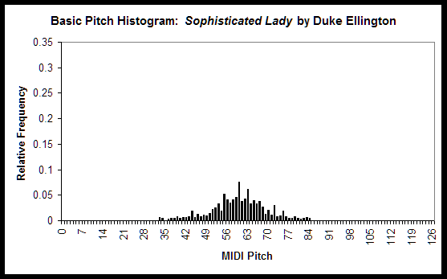
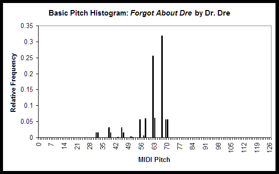
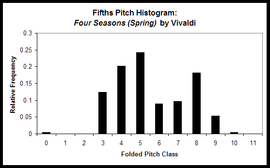
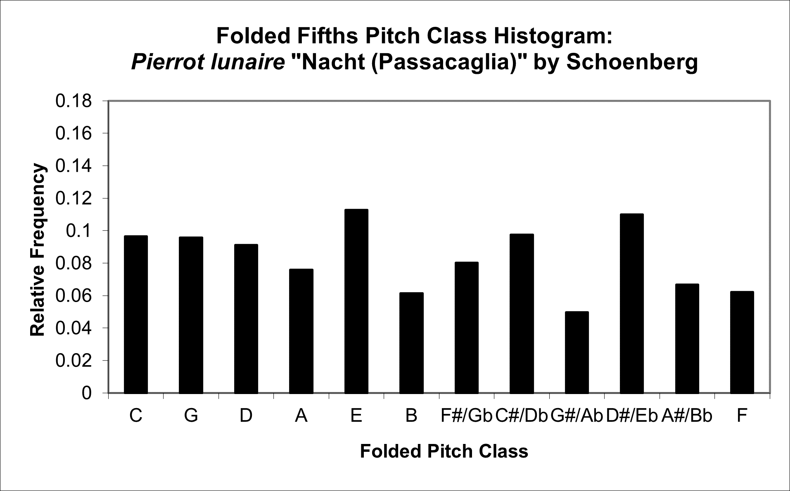
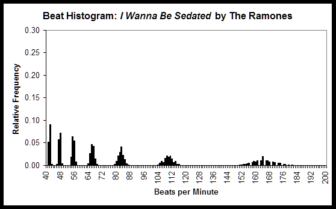
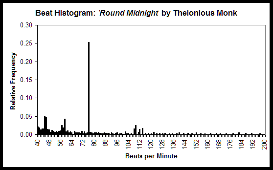

EXPLANATION OF THIS SECTION
This section describes all of the features that jSymbolic extracts. It was originally drawn largely from Chapter 4 of Cory McKay's dissertation, although many improvements and clarifications have been made since then, and many new features have been added.
Note that, although many of the feature descriptions below use MIDI-specific terminology, they are all compatible with alternative formats that jSymbolic can extract features from, such as MEI. Part of what jSybmolic does when encountering MEI files is to convert them to MIDI data in a very rich way, such that all the MIDI-related features can be extracted from them. MEI data that cannot be encoded as MIDI is maintained in a separate data pipeline, and features can be extracted from this pipeline as well (see the section below on MEI-specific features).
If a feature cannot be calculated for whatever reason for a given piece of music, the default behavior is to save a value of -1 for one-dimensional features, and null for multi-dimensional features.
FEATURES BASED ON OVERALL PITCH STATISTICS
The majority of traditional analytical systems place a particular emphasis on information related to pitch and, as one would expect, this type of information certainly has important value with respect to symbolic features as well. This first set of pitch-related features focuses on overall statistics on the pitches present in a piece, without regard to the temporal location of notes in relation to one another (features that do, in contrast, account for the context of notes and their pitches are presented in other sections below).
One particularly useful approach to calculating statistical features is to construct histograms, which consist of a set of bins each indicating some measurable quantity (e.g. how often each possible pitch occurs in a piece), and where the magnitude (or "frequency") of each bin indicates how often that quantity occurs in the piece. The jSymbolic feature catalogue uses modified versions of the three pitch histograms implemented by Tzanetakis and his colleagues (Tzanetakis and Cook 2002; Tzanetakis, Ermolinskyi and Cook 2002; Tzanetakis 2002).
The first type of histogram is a basic pitch histogram. It consists of 128 bins, one for each MIDI pitch. The magnitude of each bin is first set to the number of Note On messages in the piece with the corresponding pitch, and the histogram is normalized after all Note On messages have been accounted for. This type of histogram gives particular insights into the range and variety of pitches used in a piece.
To provide practical examples, the first figure below shows the basic pitch histogram for a Duke Ellington jazz piece, and the second shows the histogram for a Dr. Dre rap song. A number of genre-typical differences are immediately apparent from even a rough visual comparison of these two histograms, such as the fact that the rap song uses far fewer pitches than the jazz piece, for example.


The second type of histogram is called a pitch class histogram. It has one bin for each of the twelve pitch classes, which means that it is essentially a version of the basic pitch histogram where octaves are collapsed for each of the pitch classes. The magnitude of each bin is set to the number of Note On messages with a MIDI pitch that can be wrapped to this pitch class, with enharmonic equivalents assigned to the same pitch class number. The histogram is normalized, and the bins are translated so that the first bin corresponds to the pitch class with the highest magnitude, with the successive bins ordered chromatically in semitone increments. This type of histogram provides insights into areas such as the types of scales used and the amount of transposition that is present, for example.
The third type of histogram is called a folded fifths pitch class histogram, and is derived directly from the pitch class histogram. This histogram is calculated by reordering the bins of the original unordered pitch class histogram such that adjacent bins are separated by perfect fifths rather than semitones. This is done using the following equation:
B = (7a)mod(12)
where B is the folded fifths pitch histogram bin and a is the corresponding pitch class histogram bin. The number seven is used because this is the number of semitones in a perfect fifth, and the number twelve is used because there are twelve pitch classes in total. This histogram is useful for measuring dominant-tonic relationships and for looking at types of transpositions.
The utility of the folded fifths pitch histogram can be seen by comparing the first figure below, which shows the folded fifths pitch histogram for a Baroque Vivaldi concerto, with the second figure below, which shows the folded fifths pitch histogram for an atonal Schoenberg piano miniature. The Vivaldi piece never or rarely uses five of the twelve pitch classes, and the pitch classes that are used are clustered around one section of the circle of fifths. These are characteristics that one would typically expect of basic tonal music without many tonally distant modulations or significant use of chromaticism. In contrast, all of the pitch classes are used to a significant degree in the Schoenberg piece, and the most frequently used pitch classes are not clustered together on the circle of fifths, both of which are characteristics that one would expect of such an atonal piece.


All three of these histogram types are included directly as features in the jSymbolic feature catalogue, and are also used to calculate a number of other features.
Part of the challenge of histogram-related features is that one must find a way to represent the information embedded in them as useful features. Although histograms like the three described above certainly can be used directly as feature vectors (and they certainly can be with jSymbolic), experience has shown that machine learning algorithms can sometimes have trouble learning to extract useful information from them in this raw form if they are too large. Feature histograms are, however, very useful in providing an intermediate data structure from which other features can be extracted. Experience has shown informally that the two highest peaks of histograms tend to be of particular importance in extracting such information, and they are used as the basis for a number of features.
It should be noted that most of the jSymbolic features represent pitch as MIDI does, with 128 pitches (numbered 0 to 127), and with middle C set at note 60. A disadvantage with this approach, of course, is that enharmonic equivalents are assigned the same pitch number. Although this is not ideal, as it involves the loss of some potentially useful information, it is unavoidable given the need to be able to parse MIDI files and compare features extracted from MIDI files with features extracted from files in formats such as MEI. Fortunately, most of the jSymbolic features are not impacted by this loss of information. If one wishes to exclusively extract features from formats such as MEI that do distinguish between enharmonic equivalents, then jSymbolic can certainly still be used, although one will need to implement MEI-specific features (see below) that take advantage of jSymbolic's existing pipeline of MEI-specific data.
It should also be mentioned that all notes occurring on MIDI channel ten are ignored for all of the features described in this section. This is because the "pitch" values on channel ten correspond to (mostly unpitched) percussion instruments, not to pitches.
Some of the features in this section are based on MIDI Pitch Bends. Although the use of Pitch Bends is somewhat variable from MIDI encoder to MIDI encoder, and therefore not entirely dependant on the music itself, features relating to Pitch Bends can nonetheless have a high discriminating power, so they are included here. Efforts were made to use features with as limited a sensitivity to non-musical factors as possible.
The jSymbolic feature catalogue includes the following features related to overall pitch statistics:
- P-1 Basic Pitch Histogram: A feature vector consisting
of bin magnitudes of the basic pitch histogram described above. Each bin corresponds
to one of the 128 MIDI pitches, ordered from lowest to highest, and with an
interval of a semitone between each (enharmonic equivalents are assigned the
same pitch number). Bin 60 corresponds to middle C. The magnitude of of each
bin is proportional to the the number of times notes occurred at the bin's
pitch in the piece, relative to all other pitches in the piece (the histogram
is normalized).
- P-2 Pitch Class Histogram: A feature vector consisting
of bin magnitudes of the pitch class histogram described above. Each bin corresponds
to one of the 12 pitch classes, ordered in increasing pitch with an interval
of a semitone between each (enharmonic equivalents are assigned the same pitch
class number). The first bin corresponds to the most common pitch class in
the piece under consideration (it does NOT correspond to a set pitch class).
The magnitude of of each bin is proportional to the the number of times notes
occurred at the bin's pitch class in the piece, relative to all other pitch
classes in the piece (the histogram is normalized).
- P-3 Folded Fifths Pitch Class Histogram: A feature vector
consisting of bin magnitudes of the folded fifths pitch class histogram described
above. Each bin corresponds to one of the 12 pitch classes, and the bins are
ordered such that adjacent bins are separated by an ascending perfect fifth.
Bin 0 corresponds to C. Enharmonic equivalents are assigned the same pitch
class number. The magnitude of of each bin is proportional to the the number
of times notes occurred at the bin's pitch class in the piece, relative to
all other pitch classes in the piece (the histogram is normalized).
- P-4 Number of Pitches: Number of unique pitches that occur at
least once in the piece. Enharmonic equivalents are grouped together for the
purpose of this calculation.
- P-5 Number of Pitch Classes: Number of pitch classes that
occur at least once in the piece. Enharmonic equivalents are grouped together
for the purpose of this calculation.
- P-6 Number of Common Pitches: Number of unique pitches that account
individually for at least 9% of all notes. Enharmonic equivalents are grouped
together for the purpose of this calculation.
- P-7 Number of Common Pitch Classes: Number of pitch classes
that account individually for at least 20% of all notes. Enharmonic equivalents
are grouped together for the purpose of this calculation.
- P-8 Range: Difference in semitones between the highest
and lowest pitches.
- P-9 Importance of Bass Register: Fraction of notes between
MIDI pitches 0 and 54.
- P-10 Importance of Middle Register: Fraction of notes between
MIDI pitches 55 and 72.
- P-11 Importance of High Register: Fraction of notes between
MIDI pitches 73 and 127.
- P-12 Dominant Spread: Largest number of consecutive pitch
classes separated by perfect 5ths that each individually account for at least
9% of the total notes in the piece.
- P-13 Strong Tonal Centres: Number of isolated peaks in
the fifths pitch histogram that each individually account for at least 9%
of all notes in the piece.
- P-14 Mean Pitch: Mean MIDI pitch value, averaged across
all pitched notes in the piece. Set to 0 if there are no pitched notes.
- P-15 Mean Pitch Class: Mean pitch class value, averaged
across all pitched notes in the piece. A value of 0 corresponds to a mean
pitch class of C, and pitches increase chromatically by semitone in integer
units from there (e.g. a value of 2 would mean that D is the mean pitch class).
Enharmonic equivalents are treated as a single pitch class.
- P-16 Most Common Pitch: MIDI pitch value of the most frequently
occurring pitch.
- P-17 Most Common Pitch Class: The pitch class that occurs
most frequently compared to other pitch classes. A value of 0 corresponds
to C, and pitches increase chromatically by semitone in integer units (e.g.
a value of 2 would mean that D is the most common pitch class). Enharmonic
equivalents are treated as a single pitch class.
- P-18 Prevalence of Most Common Pitch: Fraction of notes
that correspond to the most common pitch.
- P-19 Prevalence of Most Common Pitch Class: Fraction of
notes that correspond to the most common pitch class.
- P-20 Relative Prevalence of Top Pitches: Relative frequency
of the second most common pitch in the piece, divided by the relative frequency
of the most common pitch.
- P-21 Relative Prevalence of Top Pitch Classes: Relative
frequency of the of the second most common pitch class in the piece, divided
by the relative frequency of the most common pitch class.
- P-22 Interval Between Most Prevalent Pitches: Absolute value
of the difference (in semitones) between the pitches of the two most frequently
occurring pitches.
- P-23 Interval Between Most Prevalent Pitch Classes: Absolute
value of the difference (in semitones) between the pitches of the two most
frequently occurring pitch classes.
- P-24 Pitch Variability: Standard deviation of the MIDI pitches of all pitched notes in the piece. Provides a measure of how close the pitches as a whole are
to the mean pitch.
- P-25 Pitch Class Variability: Standard deviation of the
pitch classes (where 0 corresponds to C, 1 to C#/Db, etc.) of all pitched notes in the piece. Provides a measure of how close the pitch classes as
a whole are to the mean pitch class.
- P-26 Pitch Class Variability After Folding: Standard deviation of the
pitch classes in the piece after being folded by perfect fifths as described for the folded fifths pitch class histogram. Provides a measure of how close the pitch classes are as
a whole from the mean pitch class from a dominant-tonic perspective.
- P-27 Pitch Skewness: Skewness of the MIDI pitches of all pitched notes in the piece. Provides a measure of how asymmetrical the pitch distribution is to either the left or the right of the mean pitch. A value of zero indicates no skew.
- P-28 Pitch Class Skewness: Skewness of the pitch classes (where 0 corresponds to C, 1 to C#/Db, etc.) of all pitched notes in the piece. Provides a measure of how asymmetrical the pitch class distribution is to either the left or the right of the mean pitch class. A value of zero indicates no skew.
- P-29 Pitch Class Skewness After Folding: Skewness of the pitch classes after being folded by perfect fifths as described for the folded fifths pitch class histogram. Provides a measure of how asymmetrical the pitch class distribution after folding is to either the left or the right of the mean from a dominant-tonic perspective. A value of zero indicates no skew.
- P-30 Pitch Kurtosis: Kurtosis of the MIDI pitches of all pitched notes in the piece. Provides a measure of how peaked or flat the pitch distribution is. The higher the kurtosis, the more the pitches are clustered near the mean and the fewer outliers there are.
- P-31 Pitch Class Kurtosis: Kurtosis of the pitch classes (where 0 corresponds to C, 1 to C#/Db, etc.) of all pitched notes in the piece. Provides a measure of how peaked or flat the pitch class distribution is. The higher the kurtosis, the more the pitch classes are clustered near the mean and the fewer outliers there are.
- P-32 Pitch Class Kurtosis After Folding: Kurtosis of the pitch classes after being folded by perfect fifths as described for the folded fifths pitch class histogram. Provides a measure of how peaked or flat the pitch classes are from a dominant-tonic perspective.
- P-33 Major or Minor: Whether the piece is major or minor,
as indicated by the first encountered major/minor metadata tag in the piece.
Set to 0 if the metadata indicates that the piece is major, or set to 1 if
the metadata indicates that it is minor. Defaults to 0 if the key signature
is unknown.
- P-34 First Pitch: The MIDI pitch value of the first note
in the piece. If there are multiple notes with simultaneous attacks at the
beginning of the piece, then the one with the lowest pitch is selected. Set to 0 if there are no pitched notes.
- P-35 First Pitch Class: The pitch class of the first note
in the piece. If there are multiple notes with simultaneous attacks at the
beginning of the piece, then the one with the lowest pitch is selected. A
value of 0 corresponds to C, and pitches increase chromatically by semitone
in integer units (e.g. a value of 2 would mean that D is the most common pitch
class). Enharmonic equivalents are treated as a single pitch class. Set to 0 if there are no pitched notes.
- P-36 Last Pitch: The MIDI pitch value of the last note
in the piece. If there are multiple notes with simultaneous attacks at the
end of the piece, then the one with the lowest pitch is selected. Set to 0 if there are no pitched notes.
- P-37 Last Pitch Class: The pitch class of the last note
in the piece. If there are multiple notes with simultaneous attacks at the
end of the piece, then the one with the lowest pitch is selected. A value
of 0 corresponds to C, and pitches increase chromatically by semitone in integer
units (e.g. a value of 2 would mean that D is the most common pitch class).
Enharmonic equivalents are treated as a single pitch class. Set to 0 if there are no pitched notes.
- P-38 Glissando Prevalence: Number of pitched MIDI Note
Ons that have at least one MIDI Pitch Bend associated with them, divided by
the total number of pitched Note Ons in the piece.
- P-39 Average Range of Glissandos: Average range of MIDI
Pitch Bends, where "range" is defined as the greatest value of the
absolute difference between 64 and the second data byte of all MIDI Pitch
Bend messages falling between the Note On and Note Off messages of any note
in the piece. Set to 0 if there are no MIDI Pitch Bends in the piece.
- P-40 Vibrato Prevalence: Number of pitched notes that have
associated MIDI Pitch Bend messages change direction at least twice in connection
with the note in question, divided by the total number of pitched Note Ons
in the piece.
- P-41 Microtone Prevalence: Number of pitched notes that
are each associated with exactly one MIDI Pitch Bend message, divided by the
total number of pitched Note Ons in the piece. Set to 0 if there are no pitched
Note Ons in the piece.
FEATURES BASED ON MELODIC INTERVALS
Although features based on overall pitch statistics are often meaningful and useful, they do not reflect information relating to the order in which pitches occur. Melody is a very important part of how many humans hear and think about music, so features based on such sequential information are needed to complement features based on overall pitch statistics. Fortunately, ample theoretical work has been done that can be taken advantage of when designing melodic features, ranging from compositional resources like manuals on writing Baroque counterpoint, to more analytically formulated ideas like melodic contour.
Unfortunately, the tasks of detecting and partitioning musical phrases and melodies, and of determining which notes belong to which phrases, are not trivial. Although expert humans can perform such tasks relatively easily, automatic systems for performing them have still achieved only limited general success, particularly in cases where the notes in a phrases are shared across voices. So, although a phrase detection pre-processing system would make many potentially useful melodic features accessible, such a system is not currently available.
What one can do fairly easily, however, is collect basic statistics about melodic intervals and melodic motion. Although such statistics may be relatively rudimentary compared to expert melodic analyses, they can still potentially be very effective in performing classifications. One can also extract somewhat more sophisticated features related to melodic contour by making a few naive but often effective basic assumptions, such as the assumptions that all notes belonging to a phrase will be on the same MIDI channel and that phrases will each follow the overall shape of a basic concave or converse arc. Although such assumptions are clearly false, and certainly not acceptable for any wide-ranging analytical framework, they do make it possible to extract some potentially discriminating higher-level melodic features without a sophisticated phrase detection system.
A melodic interval histogram is proposed here as a way of facilitating the extraction of certain basic features relating to melodic intervals. Each bin of this histogram represents a different melodic interval, and is labeled with an index indicating the number of semitones in the interval. The magnitude of each bin is set to the number of Note On messages in the piece that have a pitch interval from the preceding Note On message on the same MIDI channel corresponding to the bin label. The direction of the interval (i.e., up or down in pitch) is ignored in this histogram. The histogram is then normalized, so that the magnitude of each bin indicates the fraction of all melodic intervals that correspond to the melodic interval of the given bin.
This histogram clearly has a few limitations. It treats all voices equally, for example, even though the highest line of a piece often carries the most significant melodic information. It is also problematic for polyphonic instruments such as pianos that can play harmonies or multiple melodies simultaneously. It is, however, a quick and easy approach that has been found experimentally to often be helpful in discriminating between classes.
Another intermediate data structure is also used to help calculate some of the features listed below. This consists of a list of MIDI channels, where each entry of the list contains an array. Each array entry corresponds to a MIDI channel, and each entry in the array consists of a list of all melodic intervals, in semitones, for the associated channel. The numbers representing the intervals in this second intermediate data structure are set to negative for downward motion and to positive for upward motion.
Once again, all notes occurring on MIDI channel ten are ignored for all of the features described in this section. This is because the “pitch” values on channel ten correspond to percussion instruments, not to pitches.
The jSymbolic feature catalogue includes the following features related to melody and melodic intervals:
- M-1 Melodic Interval Histogram: A feature vector consisting of the bin magnitudes of the melodic interval histogram described above. Each bin corresponds to a melodic interval, and the bin index indicates the number of semitones comprising the interval associated with the bin (there are 128 bins in all). For example, bin 0 corresponds to repeated pitches, bin 1 to a melodic interval of one semitone, bin 2 to a melodic interval of 2 semitones, etc. The magnitude of each bin is proportional to the fraction of melodic intervals in the piece that are of the kind associated with the bin (this histogram is normalized). Rising and falling intervals are treated as identical. Melodies are assumed to be contained within individual MIDI tracks and channels, so melodic intervals are found separately for each track and channel before being combined in this histogram. It is also assumed that there is only one melody at a time per MIDI channel (if multiple notes occur simultaneously on the same MIDI tick on the same MIDI track and channel, then all notes but the first note on that tick are ignored). Other than this, all notes on the same track and the same channel are treated as if they are part of a single melody. It is also assumed that melodies do not cross MIDI tracks or channels (i.e. that they are each separately contained in their own track and channel). Only pitched notes are considered, so all notes on the unpitched MIDI Channel 10 are ignored.
- M-2 Most Common Melodic Interval: Number of semitones corresponding to the most frequently occurring melodic interval.
- M-3 Mean Melodic Interval: Mean average (in semitones) of the intervals involved in each of the melodic intervals in the piece.
- M-4 Number of Common Melodic Intervals: Number of different melodic intervals that each account individually for at least 9% of all melodic intervals.
- M-5 Distance Between Most Prevalent Melodic Intervals: Absolute value of the difference (in semitones) between the most common and second most common melodic intervals in the piece.
- M-6 Prevalence of Most Common Melodic Interval: Fraction of all melodic intervals that corresponds to the most common melodic interval.
- M-7 Relative Prevalence of Most Common Melodic Intervals: Relative frequency of the second most common melodic interval in the piece, divided by the relative frequency of the most common melodic interval.
- M-8 Amount of Arpeggiation: Fraction of melodic intervals that are repeated notes, minor thirds, major thirds, perfect fifths, minor sevenths, major sevenths, octaves, minor tenths or major tenths. This is only a very approximate measure of the amount of arpeggiation in the music, of course.
- M-9 Repeated Notes: Fraction of melodic intervals that correspond to repeated notes.
- M-10 Chromatic Motion: Fraction of melodic intervals that correspond to a semitone.
- M-11 Stepwise Motion: Fraction of melodic intervals that correspond to a minor or major second.
- M-12 Melodic Thirds: Fraction of melodic intervals that are major or minor thirds.
- M-13 Melocid Perfect Fourths: Fraction of melodic intervals that are perfect fourths.
- M-14 Melodic Tritones: Fraction of melodic intervals that are tritones.
- M-15 Melodic Fifths: Fraction of melodic intervals that are perfect fifths.
- M-16 Melodic Sixths: Fraction of melodic intervals that are major or minor sixths.
- M-17 Melodic Sevenths: Fraction of melodic intervals that are major or minor sevenths.
- M-18 Melodic Octaves: Fraction of melodic intervals that are octaves.
- M-19 Melodic Large Intervals: Fraction of melodic intervals greater than one octave.
- M-20 Minor Major Melodic Third Ratio: Combined fraction of all melodic intervals that are minor thirds, divided by the combined fraction of all melodic intervals that are major thirds. Set to 0 if there are no melodic minor thirds or melodic major thirds.
- M-21 Melodic Embellishments: Fraction of all notes that are surrounded on both sides by MIDI Note Ons on the same MIDI channel that have durations at least three times as long as the central note. Set to 0 if there are no notes in the piece.
- M-22 Direction of Melodic Motion: Fraction of melodic intervals that are rising in pitch. Set to zero if no rising or falling melodic intervals are found.
- M-23 Average Length of Melodic Arcs: Average number of notes that separate melodic peaks and troughs. Similar assumptions are made in the calculation of this feature as for the Melodic Interval Histogram. Set to 0 if no melodic arcs are found.
- M-24 Average Interval Spanned by Melodic Arcs: Average melodic interval (in semitones) separating the top note of melodic peaks and the bottom note of adjacent melodic troughs. Similar assumptions are made in the calculation of this feature as for the Melodic Interval Histogram.
- M-25 Melodic Pitch Variety: Average number of notes that go by in a MIDI channel before a note's pitch is repeated (including the repeated note itself). This is calculated across each channel individually before being combined. Notes that occur simultaneously on the same MIDI tick are only counted as one note for the purpose of this calculation. Notes that do not recur after 16 notes in the same channel are not included in this calculation.
Set to 0 if there are no qualifying repeated notes in the piece.
FEATURES BASED ON CHORDS AND VERTICAL INTERVALS
Chords in general, and tonal harmony in particular, are the areas that have typically received the most attention in traditional Western analytical systems. It is essential to point out that the existing theoretical frameworks based on tonal harmony do not apply to many kinds of music, as they were developed primarily with respect to Western classical music. As a consequence, most of the chord-based features proposed as part of the jSymbolic feature library are not based on harmonic function, and emphasize instead basic statistical information about the vertical intervals between pitches that sound simultaneously. Having recognized this, it is once again important to recall that features are useful simply if they help to differentiate between classes statistically, even if they are inspired by theoretical assumptions that do not apply to some of the music under consideration. There are therefore certain features in the jSymbolic catalogue that make use of certain basic concepts that are specific to Western harmonic theory.
Two new histograms are proposed as intermediate data structures for calculating chord-based structures. The first, called a vertical interval histogram, consists of bins associated with different vertical intervals and labeled with the number of semitones in the corresponding interval. The magnitude of each bin is found by going through a recoding MIDI tick by MIDI tick and noting all vertical intervals that are sounding at each tick, as well as the MIDI velocities of the pair of notes involved in each vertical interval. This is done exhaustively, so that multiple vertical intervals will be noted per tick if there are more than two pitches sounding simultaneously. The histogram is then normalized. The end result is a histogram that indicates which vertical intervals are present, and how significant these vertical intervals are relative to one another, with a weighting based on both MIDI velocity and the aggragated durations with which each interval is held throughout the piece. This is reasonable, since long notes often have greater harmonic significance than short notes, and stressed notes tend to be more harmonically important than notes played more softly. This histogram does not incorporate any tonal assumptions, although it does require quantization into the twelve standard Western pitches (i.e. microtones are not considered). Another histogram, the wrapped vertical interval histogram, is also found: it simply consists of the vertical interval histogram wrapped by octave, such that there are 12 bins.
It is also potentially useful to have a histogram that can be used to extract features more directly related to tonal harmony, since many music classification projects do involve music based on the basic chord ontologies of Western music. A chord type histogram is generated with this need in mind. This is a normalized histogram that has bins labeled with types of chords (in the following order and with the indicated identifying codes): partial chords consisting of just two pitch classes [0], minor triads [1], major triads [2], diminished triads [3], augmented triads [4], other triads [5], minor seventh chords [6], dominant seventh chords [7], major seventh chords [8], other chords consisting of four pitch classes [9], and complex chords with more than four pitch classes [10]. The bin magnitudes are calculated by going through MIDI ticks one by one and incrementing the counter for the bin that corresponds to the chord, if any, that is present during each given tick; the result is that the chords in this histogram are weighted by the duration with which each chord is played. All inversions are treated as equivalent and octave doubling is ignored in the calculation of this histogram.
None of these histograms provide any information about arpeggiation, unfortunately, but some information related to this is collected during the melodic feature extraction. A more sophisticated system in the future could integrate vertical statistics with arpeggios, and could also collect information about inversions as well as chord transitions in order to obtain more sophisticated and accurate features.
Once again, all notes occurring on MIDI channel ten are ignored for all of the features described in this section. This is because the "pitch" values on channel ten correspond to percussion instruments, not to pitches.
The jSymbolic feature catalogue includes the following features related to chords and vertical intervals:
- C-1 Vertical Interval Histogram: A feature vector consisting of bin magnitudes of the vertical interval histogram described above. Each of the bins is associated with a different vertical pitch interval, and is labeled with the number of semitones in that corresponding interval. More specifically, these are numbered from 0 (a unison) to 127 (a vertical interval of 127 semitones). The magnitude of each bin is found by going through a recoding MIDI tick by MIDI tick and noting all vertical intervals that are sounding at each tick, as well as the MIDI velocities of the pair of notes involved in each vertical interval. The end result is a histogram that indicates which vertical intervals are present, and how significant these vertical intervals are relative to one another, with a weighting based on both MIDI velocity and the aggragated durations with which each interval is held throughout the piece. Finally, the histogram is normalized.
- C-2 Wrapped Vertical Interval Histogram: A feature vector consisting of bin magnitudes of the wrapped vertical interval histogram described above. Each of the bins is associated with a different vertical pitch interval, and is labeled with the number of semitones in that corresponding interval. More specifically, these are numbered from 0 (a unison) to 11 (a vertical interval of 11 semitones). The magnitude of each bin is found by going through a recoding MIDI tick by MIDI tick and noting all vertical intervals that are sounding at each tick, as well as the MIDI velocities of the pair of notes involved in each vertical interval. Intervals larger than 11 semitones are wrapped (e.g. an octave (12 semitones) is added to the bin for unisons (0 semitones)). The end result is a histogram that indicates which vertical intervals are present, and how significant these vertical intervals are relative to one another, with a weighting based on both MIDI velocity and the aggregated durations with which each interval is held throughout the piece. Finally, the histogram is normalized.
- C-3 Chord Type Histogram: A feature vector consisting of bin magnitudes of the chord type histogram described above. This is a normalized histogram that has bins labeled with types of chords (in the following order and with the indicated identifying codes): partial chords consisting of just two pitch classes [0], minor triads [1], major triads [2], diminished triads [3], augmented triads [4], other triads [5], minor seventh chords [6], dominant seventh chords [7], major seventh chords [8], other chords consisting of four pitch classes [9], and complex chords with more than four pitch classes [10]. The bin magnitudes are calculated by going through MIDI ticks one by one and incrementing the counter for the bin that corresponds to the chord, if any, that is present during each given tick; the result is that the chords in this histogram are weighted by the duration with which each chord is played. All inversions are treated as equivalent and octave doubling is ignored in the calculation of this histogram. Melodic behaviour is not considered, so arpeggios are not counted in this histogram.
- C-4 Average Number of Simultaneous Pitch Classes: Average number of different pitch classes sounding simultaneously. Rests are excluded from this calculation.
- C-5 Variability of Number of Simultaneous Pitch Classes: Standard deviation of the number of different pitch classes sounding simultaneously. Rests are excluded from this calculation.
- C-6 Average Number of Simultaneous Pitches: Average number of pitches sounding simultaneously. Rests are excluded from this calculation. Unisons are also excluded from this calculation, but octave multiples are included in it.
- C-7 Variability of Number of Simultaneous Pitches: Standard deviation of the number of pitches sounding simultaneously. Rests are excluded from this calculation. Unisons are also excluded from this calculation, but octave multiples are included in it.
- C-8 Most Common Vertical Interval: The interval in semitones corresponding to the wrapped vertical interval histogram bin with the highest magnitude.
- C-9 Second Most Common Vertical Interval: The interval in semitones corresponding to the wrapped vertical interval histogram bin with the second highest magnitude.
- C-10 Distance Between Two Most Common Vertical Intervals: The interval in semitones between the wrapped vertical interval histogram bins with the two most common vertical intervals.
- C-11 Prevalence of Most Common Vertical Interval: Fraction of vertical intervals on the wrapped vertical interval histogram corresponding to the most common vertical interval.
- C-12 Prevalence of Second Most Common Vertical Interval: Fraction of vertical intervals on the wrapped vertical interval histogram corresponding to the second most common vertical interval.
- C-13 Prevalence Ratio of Two Most Common Vertical Intervals: Ratio between the fraction of notes corresponding to the second most common vertical interval on the wrapped vertical interval histogram and the fraction of vertical intervals corresponding to the most common vertical interval. Set to 0 if either of these prevalences are 0.
- C-14 Vertical Unisons: Fraction of all vertical intervals that are unisons. This is weighted by how long intervals are held (e.g. an interval lasting a whole note will be weighted four times as strongly as an interval lasting a quarter note).
-
C-15 Vertical Minor Seconds: Fraction of all wrapped vertical intervals that are minor seconds. This is weighted by how long intervals are held (e.g. an interval lasting a whole note will be weighted four times as strongly as an interval lasting a quarter note).
- C-16 Vertical Thirds: Fraction all wrapped vertical intervals that are minor or major thirds. This is weighted by how long intervals are held (e.g. an interval lasting a whole note will be weighted four times as strongly as an interval lasting a quarter note).
- C-17 Vertical Tritones: Fraction of all wrapped vertical intervals that are tritones. This is weighted by how long intervals are held (e.g. an interval lasting a whole note will be weighted four times as strongly as an interval lasting a quarter note).
- C-18 Vertical Perfect Fourths: Fraction of all wrapped vertical intervals that are perfect fourths. This is weighted by how long intervals are held (e.g. an interval lasting a whole note will be weighted four times as strongly as an interval lasting a quarter note).
- C-19 Vertical Perfect Fifths: Fraction of all wrapped vertical intervals that are perfect fifths. This is weighted by how long intervals are held (e.g. an interval lasting a whole note will be weighted four times as strongly as an interval lasting a quarter note).
- C-20 Vertical Sixths: Fraction all wrapped vertical intervals that are minor or major sixths. This is weighted by how long intervals are held (e.g. an interval lasting a whole note will be weighted four times as strongly as an interval lasting a quarter note).
- C-21 Vertical Sevenths: Fraction all wrapped vertical intervals that are minor or major sevenths. This is weighted by how long intervals are held (e.g. an interval lasting a whole note will be weighted four times as strongly as an interval lasting a quarter note).
- C-22 Vertical Octaves: Fraction of all wrapped vertical intervals that are octaves. This is weighted by how long intervals are held (e.g. an interval lasting a whole note will be weighted four times as strongly as an interval lasting a quarter note).
- C-23 Perfect Vertical Intervals: Fraction of all wrapped vertical intervals that are unisons, perfect fourths, perfect fifths or octaves. This is weighted by how long intervals are held (e.g. an interval lasting a whole note will be weighted four times as strongly as an interval lasting a quarter note).
- C-24 Vertical Dissonance Ratio: Ratio of all wrapped vertical intervals that are dissonant (2nds, tritones, and 7ths to all wrapped vertical intervals that are consonant (unisons, 3rds, 4ths, 5ths, 6ths, octaves). This is weighted by how long each of these intervals are held (e.g. an interval lasting a whole note will be weighted four times as strongly as an interval lasting a quarter note). Set to 0 if there are no dissonant vertical intervals or no consonant vertical intervals.
- C-25 Vertical Minor Third Prevalence: Fraction of the music by time where at least one wrapped vertical minor third is sounding (regardless of whatever other vertical intervals may or may not be sounding at the same time). Only that part of the music where one or more pitched notes is sounding is included in this calculation (rests and sections containing only unpitched notes are ignored).
- C-26 Vertical Major Third Prevalence: Fraction of the music by time where at least one wrapped vertical major third is sounding (regardless of whatever other vertical intervals may or may not be sounding at the same time). Only that part of the music where one or more pitched notes is sounding is included in this calculation (rests and sections containing only unpitched notes are ignored).
- C-27 Chord Duration: Average duration a chord in units of time corresponding to the duration of an idealized quarter note. A "chord" here is considered to stay the same as long as no new pitch classes are added, and no pitch classes are taken away. This "chord" may consist of any number of pitch classes, even only one. A "chord" is not considered to end if it is split by one or more rests (although the rests themselves are not counted in the duration of the "chord").
- C-28 Partial Chords: Fraction of simultaneously sounding pitch groups that consist of only two pitch classes. This is weighted by how long pitch groups are held (e.g. a pitch group lasting a whole note will be weighted four times as strongly as a pitch group lasting a quarter note).
- C-29 Standard Triads: Fraction of all simultaneously sounding pitch groups that are either major or minor triads. This is weighted by how long pitch groups are held (e.g. a pitch group lasting a whole note will be weighted four times as strongly as a pitch group lasting a quarter note).
- C-30 Diminished and Augmented Triads: Fraction of all simultaneously sounding pitch groups that are either diminished or augmented triads. This is weighted by how long pitch groups are held (e.g. a pitch group lasting a whole note will be weighted four times as strongly as a pitch group lasting a quarter note).
- C-31 Dominant Seventh Chords: Fraction of all simultaneously sounding pitch groups that are dominant seventh chords. This is weighted by how long pitch groups are held (e.g. a pitch group lasting a whole note will be weighted four times as strongly as a pitch group lasting a quarter note).
- C-32 Seventh Chords: Fraction of all simultaneously sounding pitch groups that are dominant seventh, major seventh or minor seventh chords. This is weighted by how long pitch groups are held (e.g. a pitch group lasting a whole note will be weighted four times as strongly as a pitch group lasting a quarter note).
- C-33 Non-Standard Chords: Fraction of all simultaneously sounding pitch groups that consist of more than two pitch classes yet are not major triads, are not minor triads and are not seventh chords. This is weighted by how long pitch groups are held (e.g. a pitch group lasting a whole note will be weighted four times as strongly as a pitch group lasting a quarter note).
- C-34 Complex Chords: Fraction of all simultaneously sounding pitch groups that contain more that four pitch classes. This is weighted by how long pitch groups are held (e.g. a pitch group lasting a whole note will be weighted four times as strongly as a pitch group lasting a quarter note).
- C-35 Minor Major Triad Ratio: The prevalence of minor triads divided by the prevalence of major triads. This is weighted by how long the chords are held (e.g. a chord lasting a whole note will be weighted four times as strongly as a chord lasting a quarter note). Set to 0 if there are no minor triads or if there are no major triads.
FEATURES BASED ON RHYTHM
Before delving into the details of the rhythm related features, it should be noted that they are annotated using a numbering system that divides them into two groups. The "R" group features are not influenced by tempo or note dynamics, and the "RT" group features are influenced by tempo and, sometimes, by dynamics. This division is adopted because, depending on the particular research application, it is sometimes useful to have features that take information related to such performance information into account (e.g. if the corpus from which features are to be extracted is meticulously encoded in a way that consistently makes use of this information), and it is sometimes useful to omit this information (e.g. if the corpus holds music drawn from different sources that encoded the music differently, and where the encodings themselves could therefore bias feature values). Sometimes it might be useful to use just the R features, sometimes just the RT features and sometimes both; the decision is left to the user based on the particular research project the user is interested in.
The two elementary pieces of information from which most rhythmic features can be calculated are the times at which notes begin ("note onsets") relative to one another, and the durations of individual notes. Note onsets can be extracted relatively reliably from audio data, at least in cases where note density is not too high, but durations can be more difficult to extract reliably. In the case of symbolic data, however, both note onsets and durations are easily and precisely available. As one might expect, several of the rhythmic features that are based on note onsets in the jSymbolic catalogue are similar to features that are often used in audio feature extraction systems. Duration-based features, in contrast, are very rarely currently used by audio feature extraction software, but are included in the jSymbolic feature catalogue.
Before proceeding to discuss the details of the jSymbolic rhythmic feature catalogue, it is important to emphasize certain details of how MIDI files encode rhythmic information; these must be considered when designing rhythmic features, whether for jSymbolic or for some other MIDI-compatible software. Time is measured in MIDI files using regular pulses called "ticks." The duration of each quantized quarter note is assigned a set number of ticks, referred to as "Pulses Per Quarter Note" or "PPQ." The time rate at which ticks go by is set by MIDI tempo meta-events, which in effect control the time duration of each tick (the default MIDI tempo is 120 BPM, if no tempo meta-events specify it explicitly). MIDI tempo is specified in terms of "beats per minute" or "BPM," where each beat in MIDI is considered to be a quarter note (regardless of the time signature). These tempo meta-events can occur at any point in a MIDI sequence, which means that the tempo can be different at different points in the same MIDI sequence. The PPQ setting, in contrast, is constant throughout each sequence. So, the number of ticks associated with a quarter note never changes within a given MIDI sequence, but the time duration of a quarter note will change if a tempo meta-event changes the time duration of these ticks at some point in the sequence.
One can determine the time duration of a note by counting the number of ticks that go by between a MIDI Note On and its associated Note Off, and combining this with the duration of these ticks as set by the tempo. One can also determine the rhythmic value (e.g. half note, eighth note, etc.) of a note by counting the ticks between a Note On and the corresponding Note Off, and then combining this with the PPQ setting.
One disadvantage of symbolic data is that some important rhythmic features are related to performance characteristics that are not always available in symbolic data, or available in only a very coarse sense. For example, musical scores may indicate that a piece should be played rubato or with a swing rhythm. There is a great deal of variety in the ways in which these rhythmic performance styles can be interpreted, something that can be of essential importance for tasks such as performer identification. Although certain symbolic formats (including MIDI) can represent relatively precise note start and end timings, and many recorded MIDI performances do indeed take advantage of this, MIDI files generated using score editing software are often strictly quantized rhythmically, which means that performance timing information is not always consistently available. Conversely, sometimes one might prefer for music theoretical reasons that performance interpretation be taken out of the equation, in which case non-quantized rhythms must be quantized in order to be interpreted consistently.
Happily, jSymbolic processing allows features associated with both quantized and non-quantized rhythms to be extracted, as suits a given musical task's needs. Related to this, several of the rhythm features described below are based on various histograms. These histograms are used partly done to statistically smooth over inconsistencies due to rhythm encoding style, and partly simply because such histograms can yield useful features in general.
The first rhythm-related histogram generated by jSymbolic, which focuses on note durations rather than note onsets, is called the rhythmic value histogram. It is is a normalized histogram where the value of each bin specifies the fraction of all notes in the piece with a quantized rhythmic value corresponding to that of the given bin. The bins are numbered as follows: thirty second notes (or less)s [0], sixteenth notes [1], eighth notes [2], dotted eighth notes [3], quarter notes [4], dotted quarter notes [5], half notes [6], dotted half notes [7], whole notes [8], dotted whole notes [9], double whole notes [10] and dotted double whole notes (or more ) [11].
Both pitched and unpitched notes are included in this histogram. Tempo is, of course, not relevant to this histogram. Notes with durations not precisely matching one of these rhythmic note values are mapped to the closest note value (to filter out the effects of rubato or uneven human rhythmic performances, for example). This histogram is calculated without regard to the dynamics, voice or instrument of any given note.
jSymbolic also generates two additional histograms based on quantized rhythmic values: the rhythmic value median run lengths histogram and the
rhythmic value variability in run lengths histogram. These each have twelve bins matching the same rhythmic values associated by the rhythmic value histogram, but instead of being based on the fraction of these rhythmic values overall, they are concerned with how long same-voice runs of notes with the same rhythmic value are.
An entirely different type of rhythm-related histogram generated by jSymbolic is the beat histogram, which focuses on note onsets rather than durations (unlike the rhymic value histogram, which looks at durations). Beat histograms are an approach that was first applied to MIR research by Brown (1993), and was later publicized and used for automatic genre classification by Tzanetakis and his colleagues in a number of papers (Tzanetakis, Essl & Cook 2001; Tzanetakis & Cook 2002; Tzanetakis 2002).
It is necessary to have some understanding of how autocorrelation works in order to understand how beat histograms are constructed. Autocorrelation essentially involves comparing a signal with versions of itself delayed by successive intervals. This technique is often used to find repeating patterns in signals of any kind, as it yields the relative strengths of different periodicities within a signal. In terms of musical data, autocorrelation allows one to find the relative strengths of different rhythmic pulses. jSymbolic constructs its rhythmic histograms by processing sequences of MIDI Note On events, with MIDI ticks comprising the time scale. The value is calculated to be proportional to the velocity of Note Ons in order to ensure that beats are weighted based on the strength with which notes are played. The values of lag correspond to both rhythmic periodicities as well as, after processing, the bin labels of the beat histogram, and the autocorrelation values provide the magnitude value for each bin. Calculations use the overall average tempo of the piece, in order to emphasize the metrical notation of the recording, and do thus do not take into account tempo variations in the piece due to the potential presence of multiple tempo MIDI meta-events.
Once the histogram is populated using all permissible values of lag for a given MIDI sequence, jSymbolic then downsamples and transforms it so that each bin corresponds to a rhythmic periodicity with units of beats per minute. The histogram is then normalized so that different MIDI sequences can be compared. The end result is a histogram whose bins correspond to rhythmic pulses with units of beats per minute and whose bin magnitudes indicate the relative strength of each such rhythmic pulse. In effect, a beat histogram portrays the relative strength of different beats and sub-beats within a piece.
Consider, for example, the beat histograms extracted from MIDI representations of I Wanna Be Sedated, by the punk band The Ramones, and ’Round Midnight, by the jazz performer and composer Thelonious Monk, as shown below. It is clear that I Wanna Be Sedated has significant rhythmic looseness, as demonstrated by the spread around each peak, each of which represents a strong beat periodicity. I Wanna Be Sedated also has several clear strong beats, including ones centered at 55, 66, 82, 111 (the actual tempo of the song) and 164 beats per minute, the latter two of which are harmonics of 55 and 82 beats per minute. ’Round Midnight, in contrast, has one very strong beat at 76 beats per minute, the actual tempo of the piece, and a wide range of much lower-level beat strengths. This indicates that, as might be expected, ’Round Midnight is more rhythmically complex and is also performed more tightly.


This type of information can be very representative of different musical classes, such as genre. Techno, for example, often has very clearly defined beats, without any surrounding spread, because the beats are precisely generated electronically. Much modern Classical music, to provide a contrasting example, often has much less clearly defined beats.
The jSymbolic feature catalogue includes the following rhythm-related features that are not influenced by tempo, and that are also (unless noted) not influenced by note dynamics:
- R-1 Initial Time Signature: A feature vector consisting of two values. The first is the numerator of the first specified time signature in the piece, and the second is the denominator of the same time signature. Set to 4/4 if no time signature is specified.
- R-2 Simple Initial Meter: Set to 1 if the initial meter is a standard simple meter (i.e. if the numerator of the time signature is 2, 3 or 4) and to 0 otherwise.
- R-3 Compound Initial Meter: Set to 1 if the initial meter is a standard compound meter (i.e. if the numerator of the time signature is 6, 9, 12, 15, 18 or 24) and to 0 otherwise.
- R-4 Complex Initial Meter: Set to 1 if the initial meter is a standard complex meter (i.e. if the numerator of the time signature is 5, 7, 9, 11, 13, 15, 22 or 25) and to 0 otherwise.
- R-5 Duple Initial Meter: Set to 1 if the initial meter is a standard simple or compound duple meter (i.e. if the numerator of the time signature is 2 or 6) and to 0 otherwise.
- R-6 Triple Initial Meter: Set to 1 if the initial meter is a standard simple or compound triple meter (i.e. if the numerator of the time signature is 3 or 9) and to 0 otherwise.
- R-7 Quadruple Initial Meter: Set to 1 if the initial meter is a standard simple or compound quadruple meter (i.e. if the numerator of the time signature is 4 or 12) and to 0 otherwise.
- R-8 Metrical Diversity: The number of different (unique) time signatures found in the piece. Set to 1 if no time signature is specified.
- R-9 Total Number of Notes: Total number of notes, including both pitched and unpitched notes.
- R-10 Note Density per Quarter Note: Average number of note onsets per unit of time corresponding to an idealized quarter note. Takes into account all notes in all voices, including both pitched and unpitched notes.
- R-11 Note Density per Quarter Note per Voice: Average number of note onsets per unit of time corresponding to an idealized quarter note, divided by the total number of voices present (i.e. the number of MIDI channels that contain one or more notes in the piece). Takes into account all notes in all voices, including both pitched and unpitched notes.
- R-12 Note Density per Quarter Note Variability: How much the note density per quarter note (average number of note onsetss per idealized quarter note duration) varies throughout the piece. Takes into account all notes in all voices, including both pitched and unpitched notes. In order to calculate this, the piece is broken into windows of 8 quarter note duration, and the note density of each window is calculated. The final value of this feature is then found by calculating the standard deviation of the note densities of these windows. Set to 0 if there is insufficient music for more than one window.
- R-13 Rhythmic Value Histogram: A feature vector, as described above, representing a normalized histogram where the value of each bin specifies the fraction of all notes in the music with a rhythmic value corresponding to that of the given bin. The bins are numbered as follows: thirty second notes (or less) [0], sixteenth notes [1], eighth notes [2], dotted eighth notes [3], quarter notes [4], dotted quarter notes [5], half notes [6], dotted half notes [7], whole notes [8], dotted whole notes [9], double whole notes [10] and dotted double whole notes (or more ) [11]. Both pitched and unpitched notes are included in this histogram. Tempo is, of course, not relevant to this histogram. Notes with durations not precisely matching one of these rhythmic note values are mapped to the closest note value (to filter out the effects of rubato or uneven human rhythmic performances, for example). This histogram is calculated without regard to the dynamics, voice or instrument of any given note.
- R-14 Range of Rhythmic Values: A measure of the difference between the shortest rhythmic values and the longest rhythmic values in the music. Measured in number of bins in the Rhythmic Value Histogram separating the first (i.e. the one with the shortest rhythmic value) non-zero bin and the last (i.e. the one with the longest rhythmic value) non-zero bin.
- R-15: Number of Different Rhythmic Values Present: Number of different quantized rhythmic values (e.g. quarter notes, dotted quarter notes, half notes, etc.) that occur at least once in the music. This is found by finding all non-zero entries in the Rhythmic Value Histogram.
- R-16: Number of Common Rhythmic Values Present: Number of different quantized rhythmic values (e.g. quarter notes, dotted quarter notes, half notes, etc.) that represent at least 15% of the rhythmic values in the music. This is found by examining the Rhythmic Value Histogram.
- R-17 Prevalence of Very Short Rhythmic Values: Fraction of all notes in the music that have a quantized rhythmic value less than an eighth note. This includes both pitched and unpitched notes, is calculated after rhythmic quantization, is not influenced by tempo, and is calculated without regard to the dynamics, voice or instrument of any given note.
- R-18 Prevalence of Short Rhythmic Values: Fraction of all notes in the music that have a quantized rhythmic value less than a dotted eighth note. This includes both pitched and unpitched notes, is calculated after rhythmic quantization, is not influenced by tempo, and is calculated without regard to the dynamics, voice or instrument of any given note.
- R-19 Prevalence of Medium Rhythmic Values: Fraction of all notes in the music that have a quantized rhythmic value between an eighth note and a half note (inclusive). This includes both pitched and unpitched notes, is calculated after rhythmic quantization, is not influenced by tempo, and is calculated without regard to the dynamics, voice or instrument of any given note.
- R-20 Prevalence of Long Rhythmic Values: Fraction of all notes in the music that have a quantized rhythmic value greater than a dotted quarter note. This includes both pitched and unpitched notes, is calculated after rhythmic quantization, is not influenced by tempo, and is calculated without regard to the dynamics, voice or instrument of any given note.
- R-21 Prevalence of Very Long Rhythmic Values: Fraction of all notes in the music that have a quantized rhythmic value greater than a whole note. This includes both pitched and unpitched notes, is calculated after rhythmic quantization, is not influenced by tempo, and is calculated without regard to the dynamics, voice or instrument of any given note.
- R-22 Prevalence of Dotted Notes: Fraction of all notes in the music that have a quantized rhythmic value consisting of a dotted eighth note, dotted quarter note, dotted half note, dotted whole note or dotted double whole note. This includes both pitched and unpitched notes, is calculated after rhythmic quantization, is not influenced by tempo, and is calculated without regard to the dynamics, voice or instrument of any given note.
- R-23 Shortest Rhythmic Value: Rhythmic value of the shortest note in the piece, expressed as a fraction of a quarter note. For example, a value of 0.5 indicates that the shortest note is an eighth note. This calculation includes both pitched and unpitched notes, is calculated after rhythmic quantization, is not influenced by tempo, and is calculated without regard to the dynamics, voice or instrument of any given note.
- R-24 Longest Rhythmic Value: Rhythmic value of the longest note in the piece, expressed as a fraction of a quarter note. For example, a value of 2 indicates that the longest note is a half note. This calculation includes both pitched and unpitched notes, is calculated after rhythmic quantization, is not influenced by tempo, and is calculated without regard to the dynamics, voice or instrument of any given note.
- R-25 Mean Rhythmic Value: The mean rhythmic value of the music, in quarter note units. For example, a Mean Rhythmic Value of 0.5 would mean that the duration of an eighth note corresponds to the mean average rhythmic value in the music. This calculation includes both pitched and unpitched notes, is calculated after rhythmic quantization, is not influenced by tempo, and is calculated without regard to the dynamics, voice or instrument of any given note.
- R-26 Most Common Rhythmic Value: The most common rhythmic value of the music, in quarter note units. So, for example, a Most Common Rhythmic Value of 0.5 would mean that eighth notes occur more frequently than any other rhythmic value. This calculation includes both pitched and unpitched notes, is calculated after rhythmic quantization, is not influenced by tempo, and is calculated without regard to the dynamics, voice or instrument of any given note.
- R-27 Prevalence of Most Common Rhythmic Value: The fraction of all notes that have a rhythmic value corresponding to the most common rhythmic value in the music. This calculation includes both pitched and unpitched notes, is calculated after rhythmic quantization, is not influenced by tempo, and is calculated without regard to the dynamics, voice or instrument of any given note.
- R-28 Relative Prevalence of Most Common Rhythmic Values: Relative frequency of the of the second most common rhythmic value in the piece, divided by the relative frequency of the most common rhythmic value. This calculation includes both pitched and unpitched notes, is calculated after rhythmic quantization, is not influenced by tempo, and is calculated without regard to the dynamics, voice or instrument of any given note.
- R-29 Difference Between Most Common Rhythmic Values: A measure of the difference between the two most common rhythmic values in the music. Measured in number of bins in the Rhythmic Value Histogram separating the two most common rhythmic values.
- R-30 Rhythmic Value Variability: Standard deviation of the note durations in quarter notes of all notes in the music. Provides a measure of how close the rhythmic values are to the mean rhythmic value. This calculation includes both pitched and unpitched notes, is calculated after rhythmic quantization, is not influenced by tempo, and is calculated without regard to the dynamics, voice or instrument of any given note.
- R-31 Rhythmic Value Skewness: Skewness of the note durations in quarter notes of all notes in the music. Provides a measure of how asymmetrical the rhythmic value distribution is to either the left or the right of the mean rhythmic value. A value of zero indicates no skew. This calculation includes both pitched and unpitched notes, is calculated after rhythmic quantization, is not influenced by tempo, and is calculated without regard to the dynamics, voice or instrument of any given note.
- R-32 Rhythmic Value Kurtosis: Kurtosis of the note durations in quarter notes of all notes in the music. Provides a measure of how peaked or flat the rhythmic value distribution is. The higher the kurtosis, the more the rhythmic values are clustered near the mean and the fewer outliers there are. This calculation includes both pitched and unpitched notes, is calculated after rhythmic quantization, is not influenced by tempo, and is calculated without regard to the dynamics, voice or instrument of any given note.
- R-33 Rhythmic Value Median Run Lengths Histogram: A normalized feature vector that indicates, for each rhythmic value, the normalized median number of times that notes with that rhythmic value occur consecutively (either vertically or horizontally) in the same voice (MIDI channel and track). Each bin corresponds to a different rhythmic value, and they are numbered as follows: thirty second notes (or less) [0], sixteenth notes [1], eighth notes [2], dotted eighth notes [3], quarter notes [4], dotted quarter notes [5], half notes [6], dotted half notes [7], whole notes [8], dotted whole notes [9], double whole notes [10] and dotted double whole notes (or more ) [11]. Both pitched and unpitched notes are included in this histogram. Tempo is, of course, not relevant to this histogram. Notes with durations not precisely matching one of these rhythmic note values are mapped to the closest note value (to filter out the effects of rubato or uneven human rhythmic performances, for example). This histogram is calculated without regard to dynamics.
- R-34 Mean Rhythmic Value Run Length: Mean number of notes of the same rhythmic value that occur consecutively (either vertically or horizontally) in the same voice (MIDI channel and track). This calculation includes both pitched and unpitched notes, is calculated after rhythmic quantization and not influenced by neither tempo nor dynamics.
- R-35 Median Rhythmic Value Run Length: Median number of notes of the same rhythmic value that occur consecutively (either vertically or horizontally) in the same voice (MIDI channel and track). This calculation includes both pitched and unpitched notes, is calculated after rhythmic quantization and not influenced by neither tempo nor dynamics.
- R-36 Variability in Rhythmic Value Run Lengths: Standard deviation of the numbers of notes of the same rhythmic value that occur consecutively (either vertically or horizontally) in the same voice (MIDI channel and track). This calculation includes both pitched and unpitched notes, is calculated after rhythmic quantization and not influenced by neither tempo nor dynamics.
- R-37 Rhythmic Value Variability in Run Lengths Histogram: A normalized feature vector that indicates, for each rhythmic value, the normalized standard deviation of the number of times that notes with that rhythmic value occur consecutively (either vertically or horizontally) in the same voice (MIDI channel and track). Each bin corresponds to a different rhythmic value, and they are numbered as follows: thirty second notes (or less) [0], sixteenth notes [1], eighth notes [2], dotted eighth notes [3], quarter notes [4], dotted quarter notes [5], half notes [6], dotted half notes [7], whole notes [8], dotted whole notes [9], double whole notes [10] and dotted double whole notes (or more ) [11]. Both pitched and unpitched notes are included in this histogram. Tempo is, of course, not relevant to this histogram. Notes with durations not precisely matching one of these rhythmic note values are mapped to the closest note value (to filter out the effects of rubato or uneven human rhythmic performances, for example). This histogram is calculated without regard to dynamics.
- R-38 Mean Rhythmic Value Offset: Mean offset in duration of notes from the idealized durations of each of their nearest quantized rhythmic values, expressed as a fraction of the duration of an idealized quantized quarter note. Offsets are treated as absolute values, so offsets that are longer or shorter than each idealized duration are both treated as identical positive numbers in this calculation. This feature provides an indication of how consistently quantized note durations are or, expressed slightly differently, how well they conform to idealized note durations. Higher values indicate greater average deviation from idealized note durations. Both pitched and unpitched notes are included, and this is calculated without regard to the dynamics, voice or instrument of any given note.
- R-39 Median Rhythmic Value Offset: Median offset in duration of notes from the idealized durations of each of their nearest quantized rhythmic values, expressed as a fraction of the duration of an idealized quantized quarter note. Offsets are treated as absolute values, so offsets that are longer or shorter than each idealized duration are both treated as identical positive numbers in this calculation. This feature provides an indication of how consistently quantized note durations are or, expressed slightly differently, how well they conform to idealized note durations. Higher values indicate greater average deviation from idealized note durations. Both pitched and unpitched notes are included, and this is calculated without regard to the dynamics, voice or instrument of any given note.
- R-40 Variability of Rhythmic Value Offsets: Standard deviation of the offsets of note durations of notes from the idealized durations of each of their nearest quantized rhythmic values, expressed as a fraction of the duration of an idealized quantized quarter note. Offsets are treated as absolute values, so offsets that are longer or shorter than each idealized duration are both treated as identical positive numbers in this calculation. This feature provides an indication of how much these offsets vary or, expressed slightly differently, how rhythmically consistent note durations are. A higher value indicates greater variety in offsets between different notes. Both pitched and unpitched notes are included, and this is calculated without regard to the dynamics, voice or instrument of any given note.
- R-41 Complete Rests Fraction: Fraction of the music during which no pitched notes are sounding on any MIDI channel. Non-pitched (MIDI channel 10) notes are not considered in this calculation.
- R-42 Partial Rests Fraction: Fraction of the music during which no note is sounding on at least one active MIDI channel. Non-pitched (MIDI channel 10) notes ARE considered in this calculation. Only channels containing at least one note are counted in this calculation.
- R-43 Average Rest Fraction Across Voices: Fraction of the duration of each MIDI channel during which no note is sounding on that channel, averaged across all channels that contain at least one note. Non-pitched (MIDI channel 10) notes ARE considered in this calculation.
- R-44 Longest Complete Rest: Longest amount of uninterrupted time (expressed as a fraction of the duration of a quarter note) in which no pitched notes are sounding on any MIDI channel. Non-pitched (MIDI channel 10) notes are not considered in this calculation. Rests shorter than 0.1 of a quarter note are ignored in this calculation.
- R-45 Longest Partial Rest: Longest amount of uninterrupted time (expressed as a fraction of the duration of a quarter note) in which no notes are sounding on at least one active MIDI channel. Non-pitched (MIDI channel 10) notes ARE considered in this calculation. Only channels containing at least one note are counted in this calculation. Rests shorter than 0.1 of a quarter note are ignored in this calculation.
- R-46 Mean Complete Rest Duration: Mean duration of complete rests in the piece, expressed as a fraction of the duration of a quarter note. A complete rest is defined as a period in which no pitched notes are sounding on any MIDI channel. Non-pitched (MIDI channel 10) notes are not considered in this calculation. Rests shorter than 0.1 of a quarter note are ignored in this calculation.
- R-47 Mean Partial Rest Duration: Mean duration of rests in the piece, expressed as a fraction of the duration of a quarter note. This is calculated voice-by-voice, where each rest included in the calculation corresponds to a rest in one MIDI channel, regardless of what may or may not be happening simultaneously in any other MIDI channels. Non-pitched (MIDI channel 10) notes ARE considered in this calculation. Only channels containing at least one note are counted in this calculation. Rests shorter than 0.1 of a quarter note are ignored in this calculation.
- R-48 Median Complete Rest Duration: Median duration of complete rests in the piece, expressed as a fraction of the duration of a quarter note. A complete rest is defined as a period in which no pitched notes are sounding on any MIDI channel. Non-pitched (MIDI channel 10) notes are not considered in this calculation. Rests shorter than 0.1 of a quarter note are ignored in this calculation.
- R-49 Median Partial Rest Duration: Median duration of rests in the piece, expressed as a fraction of the duration of a quarter note. This is calculated voice-by-voice, where each rest included in the calculation corresponds to a rest in one MIDI channel, regardless of what may or may not be happening simultaneously in any other MIDI channels. Non-pitched (MIDI channel 10) notes ARE considered in this calculation. Only channels containing at least one note are counted in this calculation. Rests shorter than 0.1 of a quarter note are ignored in this calculation.
- R-50 Variability of Complete Rest Durations: Standard deviation of the durations of all complete rests in the piece, expressed as a fraction of the duration of a quarter note. A complete rest is defined as a period in which no pitched notes are sounding on any MIDI channel. Non-pitched (MIDI channel 10) notes are not considered in this calculation. Rests shorter than 0.1 of a quarter note are ignored in this calculation.
- R-51 Variability of Partial Rest Durations: Standard deviation of the durations of rests in the piece, expressed as a fraction of the duration of a quarter note. This is calculated voice-by-voice, where each rest included in the calculation corresponds to a rest in one MIDI channel, regardless of what may or may not be happening simultaneously in any other MIDI channels. Non-pitched (MIDI channel 10) notes ARE considered in this calculation. Only channels containing at least one note are counted in this calculation. Rests shorter than 0.1 of a quarter note are ignored in this calculation.
- R-52 Variability Across Voices of Combined Rests: Standard deviation of the total amount of time (expressed as a fraction of the duration of a quarter note) per active MIDI channel in which no notes are sounding in that channel. Only channels containing at least one note are counted in this calculation. Non-pitched (MIDI channel 10) notes ARE considered in this calculation.
- R-53 Beat Histogram Tempo Standardized: A feature vector consisting of the bin magnitudes of the beat histogram described in the jSymbolic manual. However, the tempo of the music is standardized to 120 BPM throughout the piece before this histogram is calculated. This means that variations in tempo within a single piece are in effect eliminated for the purposes of this histogram. The tempo-independent beat histograms of different pieces can also be compared in a way that is independent of potential tempo differences between the pieces. Rubato and dynamics do still influence the tempo-independent beat histogram, however. Also, the first 40 bins are not included in this feature vector, as is the case with the basic beat histogram. Each bin corresponds to a different beats per minute periodicity, with tempo increasing with the bin index. The magnitude of each bin is proportional to the cumulative loudness (MIDI velocity) of the notes that occur at that bin's rhythmic periodicity. The histogram is normalized.
- R-54 Number of Strong Rhythmic Pulses – Tempo Standardized: Number of tempo-standardized beat histogram peaks with normalized magnitudes over 0.1.
- R-55 Number of Moderate Rhythmic Pulses – Tempo Standardized: Number of tempo-standardized beat histogram peaks with normalized magnitudes over 0.01.
- R-56 Number of Relatively Strong Rhythmic Pulses – Tempo Standardized: Number of tempo-standardized beat histogram peaks with magnitudes at least 30% as high as the magnitude of the tempo-standardized beat histogram peak with the highest magnitude.
- R-57 Strongest Rhythmic Pulse – Tempo Standardized: Bin index of the tempo-standardized beat histogram bin with the highest magnitude.
- R-58 Second Strongest Rhythmic Pulse – Tempo Standardized: Bin index of the tempo-standardized beat histogram peak with the second highest magnitude.
- R-59 Harmonicity of Two Strongest Rhythmic Pulses – Tempo Standardized: Bin index of the higher (in terms of bin index) of the two tempo-standardized beat histogram peaks with the highest magnitude, divided by the index of the lower (in terms of bin index) of the two bins.
- R-60 Strength of Strongest Rhythmic Pulse – Tempo Standardized: Magnitude of the tempo-standardized beat histogram bin with the highest magnitude.
- R-61 Strength of Second Strongest Rhythmic Pulse – Tempo Standardized: Magnitude of the tempo-standardized beat histogram peak with the second highest magnitude.
- R-62 Strength Ratio of Two Strongest Rhythmic Pulses – Tempo Standardized: Magnitude of the tempo-standardized beat histogram peak with the highest magnitude divided by the magnitude of the beat histogram peak with the second highest magnitude.
- R-63 Combined Strength of Two Strongest Rhythmic Pulses – Tempo Standardized: Sum of the magnitudes of the two tempo-standardized beat histogram peaks with the highest magnitudes.
- R-64 Rhythmic Variability – Tempo Standardized: Standard deviation of the tempo-standardized beat histogram bin magnitudes.
- R-65 Rhythmic Looseness – Tempo Standardized: Average width of tempo-standardized beat histogram peaks. The width of a peak is defined here as the distance (in beats per minute) between the two points on the peak in question that have magnitudes closest to 30% of the height of the peak. Only peaks with magnitudes at least 30% as high as the highest peak are considered in this calculation.
- R-66 Polyrhythms – Tempo Standardized: Number of tempo-standardized beat histogram peaks with magnitudes at least 30% as high as the magnitude of the highest peak, and whose bin labels are not integer multiples or factors (using only multipliers of 1, 2, 3, 4, 6 and 8, and with an accepted error of +/- 3 bins) of the bin label of the peak with the highest magnitude. This number is then divided by the total number of bins with frequencies over 30% of the highest magnitude.
The jSymbolic feature catalogue also includes the following rhythm-related features that are influenced by tempo and (sometimes) note dynamics. Note that, for all these features, if no tempo is explicitly specified, then the default MIDI tempo of 120 BPM is used in the calculation of these features when necessary:
- RT-1 Initial Tempo: Tempo in beats per minute at the start of the piece. Set to the default MIDI value (120 BPM) if no tempo is specified explicitly.
- RT-2 Mean Tempo: Average tempo of the piece in beats per minute. Set to the default MIDI value (120 BPM) if no tempo is specified explicitly.
- RT-3 Tempo Variability: Standard deviation of the tempo in beats per minute.
- RT-4 Duration in Seconds: Total duration (in seconds) of the piece.
- RT-5 Note Density: Average number of notes per second. Takes into account all notes in all voices, including both pitched and unpitched notes.
- RT-6 Note Density Variability: How much the note density (average number of notes per second) varies throughout the piece. Takes into account all notes in all voices, including both pitched and unpitched notes. In order to calculate this, the piece is broken into windows of 5 second duration, and the note density of each window is calculated. The final value of this feature is then found by calculating the standard deviation of the note densities of these windows. Set to 0 if there is insufficient music for more than one window.
- RT-7 Average Time Between Attacks: Average time (in seconds) between Note On events (regardless of MIDI channel). Set to 0 if there are less than two attacks.
- RT-8 Average Time Between Attacks for Each Voice: Average of the individual channel averages of time (in seconds) between Note On events in each given MIDI channel. Only channels that contain at least one note are included in this calculation.
- RT-9 Variability of Time Between Attacks: Standard deviation of the times (in seconds) between Note On events (regardless of MIDI channel).
- RT-10 Average Variability of Time Between Attacks for Each Voice: Average of the standard deviations (in seconds) of each individual MIDI channel's time between Note On events. Only channels that contain at least one note are included in this calculation.
- RT-11 Minimum Note Duration: Duration of the shortest note in the piece (in seconds). Set to 0 if there are no notes.
- RT-12 Maximum Note Duration: Duration of the longest note in the piece (in seconds).
- RT-13 Average Note Duration: Average duration of notes (in seconds).
- RT-14 Variability of Note Durations: Standard deviation of note durations (in seconds).
- RT-15 Amount of Staccato: Number of notes with a duration less than 0.1 seconds, divided by the total number of notes in the piece.
- RT-16 Beat Histogram: A feature vector consisting of the bin magnitudes of the beat histogram described above. The first 40 bins are not included in this feature vector, however. Each bin corresponds to a different beats per minute periodicity, with tempo increasing with the bin index. The magnitude of each bin is proportional to the cumulative loudness (MIDI velocity) of the notes that occur at that bin's rhythmic periodicity. The histogram is normalized.
- RT-17 Number of Strong Rhythmic Pulses: Number of beat histogram peaks with normalized magnitudes over 0.1.
- RT-18 Number of Moderate Rhythmic Pulses: Number of beat histogram peaks with normalized magnitudes over 0.01.
- RT-19 Number of Relatively Strong Rhythmic Pulses: Number of beat histogram peaks with magnitudes at least 30% as high as the magnitude of the beat histogram peak with the highest magnitude.
- RT-20 Strongest Rhythmic Pulse: Bin index of the beat histogram bin with the highest magnitude.
- RT-21 Second Strongest Rhythmic Pulse: Bin index of the beat histogram peak with the second highest magnitude.
- RT-22 Harmonicity of Two Strongest Rhythmic Pulses: Bin index of the higher (in terms of bin index) of the two beat histogram peaks with the highest magnitude, divided by the index of the lower (in terms of bin index) of the two bins.
- RT-23 Strength of Strongest Rhythmic Pulse: Magnitude of the beat histogram bin with the highest magnitude.
- RT-24 Strength of Second Strongest Rhythmic Pulse: Magnitude of the beat histogram peak with the second highest magnitude.
- RT-25 Strength Ratio of Two Strongest Rhythmic Pulses: Magnitude of the beat histogram peak with the highest magnitude divided by the magnitude of the beat histogram peak with the second highest magnitude.
- RT-26 Combined Strength of Two Strongest Rhythmic Pulses: Sum of the magnitudes of the two beat histogram peaks with the highest magnitudes.
- RT-27 Rhythmic Variability: Standard deviation of the beat histogram bin magnitudes.
- RT-28 Rhythmic Looseness: Average width of beat histogram peaks. The width of a peak is defined here as the distance (in beats per minute) between the two points on the peak in question that have magnitudes closest to 30% of the height of the peak. Only peaks with magnitudes at least 30% as high as the highest peak are considered in this calculation.
- RT-29 Polyrhythms: Number of beat histogram peaks with magnitudes at least 30% as high as the magnitude of the highest peak, and whose bin labels are not integer multiples or factors (using only multipliers of 1, 2, 3, 4, 6 and 8, and with an accepted error of +/- 3 bins) of the bin label of the peak with the highest magnitude. This number is then divided by the total number of bins with frequencies over 30% of the highest magnitude.
FEATURES BASED ON INSTRUMENTATION
Although there is a significant amount of literature on instrumentation with respect to composing and arranging, very few music analytical systems take instrumentation into consideration. This is a shame, as information on instrumentation can in fact be very helpful in discriminating between certain types of musical classes.
As was the case with the feature types presented above, histograms are also useful both as feature vectors and as intermediate data structures for calculating other features. Five instrumentation histograms in particular are used: the Pitched Instruments Present, Unpitched Instruments Present, Note Prevalence of Pitched Instruments, Note Prevalence of Unpitched Instruments and Time Prevalence of Pitched Instruments histograms. Each of these is described below.
The jSymbolic software capitalizes on the fact that the General MIDI (level 1) specification allows MIDI files to include 128 different pitched-instrument patches, and the MIDI Percussion Key Map permits a further 47 percussion instruments. Although these MIDI instruments are certainly much fewer in number than the full range of extant instruments, particularly with respect to non-Western musics, they are nonetheless diverse enough for a reasonable variety of musical types.
MIDI instrumentation notation can be somewhat sensitive to encoding inconsistencies between different MIDI authors in some cases. In a few fortunately rare cases, authors fail to specify patch numbers, with the result that all notes are played using a piano patch by default. Another problem is the inconsistency in the choice of patches that are used to represent sung lines, since there is no good General MIDI patch for solo vocal lines. Similarly, there are some inconsistencies in MEI with respect to how various instruments are specified.
Despite these occasional problems, however, features based on instrumentation can still be highly characteristic of various musical categories, and the complementary use of other types of features can help to counterbalance inconsistencies in individual authors’ choices of patches.
The jSymbolic feature catalogue includes the following instrumentation-related features:
- I-1 Pitched Instruments Present: A feature vector indicating which pitched instruments are present. Has one entry for each of the 128 General MIDI Instrument patches (0 is Acoustic Piano, 40 is Violin, etc.). Each value is set to 1 if at least one note is played using the corresponding patch, or to 0 if that patch is never used.
- I-2 Unpitched Instruments Present: A feature vector indicating which unpitched instruments are present. Has one entry for each of the 47 MIDI Percussion Key Map instruments. Each value is set to 1 if at least one note is played using the corresponding instrument, or to 0 if that instrument is never used. It should be noted that only MIDI Channel 10 instruments 35 to 81 are included here, as they are the ones that meet the official standard (they are correspondingly indexed in this feature vector from 0 to 46, such that index 0 corresponds to Acoustic Bass Drum, index 4 corresponds to Hand Clap, etc.).
- I-3 Note Prevalence of Pitched Instruments: A feature vector indicating the fraction of (pitched) notes played with each of the 128 General MIDI Instrument patches (0 is Acoustic Piano, 40 is Violin, etc.). Has one entry for each of these instruments, and the value of each is set to the number of Note Ons played with the corresponding MIDI patch, divided by the total number of Note Ons in the piece.
- I-4 Note Prevalence of Unpitched Instruments: A feature vector indicating the fraction of (unpitched) notes played with each of the 47 MIDI Percussion Key Map instruments. Has one entry for each of these 47 instruments, and the value of each is set to the number of Note Ons played with the corresponding instrument, divided by the total number of Note Ons in the piece. It should be noted that only MIDI Channel 10 instruments 35 to 81 are included here, as they are the ones that meet the official standard (they are correspondingly indexed in this feature vector from 0 to 46, such that index 0 corresponds to Acoustic Bass Drum, index 4 corresponds to Hand Clap, etc.).
- I-5 Time Prevalence of Pitched Instruments: A feature vector indicating the fraction of time during which (pitched) notes are being sounded by each of the 128 General MIDI Instrument patches (0 is Acoustic Piano, 40 is Violin, etc.). Has one entry for each of these instruments, and the value of each is set to to the total time in seconds in a piece during which at least one note is being sounded with the corresponding MIDI patch, divided by the total length of the piece in seconds.
- I-6 Variability of Note Prevalence of Pitched Instruments: Standard deviation of the fraction of total notes in the piece played by each (pitched) General MIDI Instrument patch that is used to play at least one note.
- I-7 Variability of Note Prevalence of Unpitched Instruments: Standard deviation of the fraction of total notes in the piece played by each (unpitched) MIDI Percussion Key Map instrument that is used to play at least one note. It should be noted that only MIDI Channel 10 instruments 35 to 81 are included here, as they are the ones that meet the official standard.
- I-8 Number of Pitched Instruments: Total number of (pitched) General MIDI instrument patches that are used to play at least one note.
- I-9 Number of Unpitched Instruments: Total number of (unpitched) MIDI Percussion Key Map instruments that are used to play at least one note. It should be noted that only MIDI Channel 10 instruments 35 to 81 are included here, as they are the ones that meet the official standard.
- I-10 Unpitched Percussion Instrument Prevalence: Fraction of all Note Ons played by (unpitched) MIDI Percussion Key Map instruments. It should be noted that only MIDI Channel 10 instruments 35 to 81 are included here, as they are the ones that meet the official standard.
- I-11 String Keyboard Prevalence: Fraction of all Note Ons played by string keyboard instruments (General MIDI patches 1 to 8).
- I-12 Acoustic Guitar Prevalence: Fraction of all Note Ons played by acoustic guitar instruments (General MIDI patches 25 and 26).
- I-13 Electric Guitar Prevalence: Fraction of all Note Ons played by electric guitar instruments (General MIDI patches 27 to 32).
- I-14 Violin Prevalence: Fraction of all Note Ons played by violin instruments (General MIDI patches 41 or 111).
- I-15 Saxophone Prevalence: Fraction of all Note Ons played by saxophone instruments (General MIDI patches 65 to 68).
- I-16 Brass Prevalence: Fraction of all Note Ons played by brass instruments, including saxophones (General MIDI patches 57 to 68).
- I-17 Woodwinds Prevalence: Fraction of all Note Ons played by woodwind instruments (General MIDI patches 69 to 76).
- I-18 Orchestral Strings Prevalence: Fraction of all Note Ons played by orchestral string instruments (General MIDI patches 41 to 47).
- I-19 String Ensemble Prevalence: Fraction of all Note Ons played by orchestral string ensemble instruments (General MIDI patches 49 to 52).
- I-20 Electric Instrument Prevalence: Fraction of all Note Ons played by electric non-"synth" instruments (General MIDI patches 5, 6, 17, 19, 27 to 32, 34 to 40).
FEATURES BASED ON MUSICAL TEXTURE
Although the term "texture" is associated with several different musical meanings, the features falling into this category of the jSymbolic catalogue relate specifically to the number of independent voices in a piece and how these voices relate to one another.
jSymbolic takes advantage of the fact that MIDI notes can be assigned to different channels, thus making it possible to segregate the notes belonging to different voices. Although it might seem natural to use MIDI tracks instead of channels to distinguish between voices, since only a maximum of sixteen MIDI channels are available, this is an ineffective approach in practice. Using MIDI tracks would mean that it would be impossible to extract texture-based features from all Type 0 MIDI files, since this format only allow permits a single track to be represented. Even in the case of Type 1 files, which do allow tracks to be specified, it is still not unusual to find all MIDI data saved on a single track in practice. Almost all MIDI files do use different channels for different voices, however, and it is possible to take advantage of Program Change messages to multiplex multiple voices onto a single channel in order to avoid being restricted to only sixteen voices. It was therefore decided to use MIDI channels in order to distinguish between voices rather than MIDI tracks.
This approach is not perfect, as it is possible to use a single channel to hold multiple voices even without regular program change messages. A piano could be used to play a four-voice chorale, for example, with all notes occurring on one MIDI channel. This problem is unavoidable with respect to MIDI data, unfortunately, unless one implements a sophisticated voice partitioning pre-processing module to automatically segregate voices prior to feature extraction, something that is beyond the current scope of this work. Fortunately, this problem does not occur often in MIDI files.
An astute reader will also note that some of the features below pay special attention to the loudest voice, which is to say to voice with the highest average MIDI velocity. This is an imperfect but often effective method for guessing which voice carries the melody, or is in some other way the most important voice.
The jSymbolic feature catalogue includes the following texture-related features:
- T-1 Maximum Number of Independent Voices: Maximum number of different channels in which notes are sounded simultaneously.
- T-2 Average Number of Independent Voices: Average number of different channels in which notes are sounded simultaneously. Rests are not included in this calculation.
- T-3 Variability of Number of Independent Voices: Standard deviation of the number of different channels in which notes are sounded simultaneously at each given moment (MIDI tick). Rests are not included in this calculation.
- T-4 Voice Equality – Number of Notes: Standard deviation of the total number of Note Ons in each channel that contains at least one note.
- T-5 Voice Equality – Note Duration: Standard deviation of the cumulative amount of time during which one or more notes were sounding in each channel that contains at least one note.
- T-6 Voice Equality – Dynamics: Standard deviation of the average loudness (MIDI velocity) of notes in each channel that contains at least one note.
- T-7 Voice Equality – Melodic Leaps: Standard deviation of the average melodic leap distance of each channel that contains at least one note.
- T-8 Voice Equality – Range: Standard deviation of the differences between the highest and lowest pitches in each channel that contains at least one note.
- T-9 Importance of Loudest Voice: Difference between the average loudness (MIDI velocity) of the loudest channel and the average loudness of the other channels that contain at least one note.
- T-10 Relative Range of Loudest Voice: Difference between the highest note and the lowest note played in the channel with the highest average loudness (MIDI velocity), divided by the difference between the highest note and the lowest note in the piece as a whole. Set to 0 if there if there are fewer than 2 pitches in the music.
- T-11 Relative Range Isolation of Loudest Voice: Number of pitched notes in the MIDI channel with the highest average loudness that fall outside the range of any other pitched channel, divided by the total number of notes in the channel with the highest average loudness. Set to 0 if there are only 0 or 1 channels containing pitched notes.
- T-12 Relative Range of Highest Line: Pitch difference in semitones between the highest note and the lowest note played in the channel with the highest average pitch, divided by the difference between the highest note and the lowest note in the piece overall. Set to 0 if there if there are fewer than 2 pitches in the music.
- T-13 Relative Note Density of Highest Line: Number of Note Ons in the channel with the highest average pitch, divided by the average number of Note Ons in all channels that contain at least one note.
- T-14 Relative Note Durations of Lowest Line: Average duration of notes (in seconds) in the channel with the lowest average pitch, divided by the average duration of notes in all channels that contain at least one note.
- T-15 Relative Size of Melodic Intervals in Lowest Line: Average melodic interval in semitones in the channel with the lowest average pitch, divided by the average melodic interval in all channels that contain at least two notes.
- T-16 Voice Overlap: Number of notes played within the range of another channel, divided by the total number of notes in the piece as a whole.
- T-17 Voice Separation: Average separation in semitones between the average pitches of consecutive channels (after sorting based on average pitch) that contain at least one note.
- T-18 Variability of Voice Separation: Average separation in semi-tones between the average pitches of consecutive channels (after sorting based on average pitch) that contain at least one note.
- T-19 Parallel Motion: Fraction of movements between voices that consist of parallel motion (the fraction is calculated relative to the total amount of qualifying transitions, including all parallel, similar, contrary and oblique transitions). If more than two voices are involved in a given pitch transition, then each possible pair of voices comprising the transition is included in the calculation. Note that only transitions from one set of pitches to another set of pitches comprising the same number of pitches as the first are included in this calculation, although a brief lookahead is performed in order to accommodate small rhythmic desynchronizations (e.g. if a MIDI file is a transcription of a human performance). Only unique pitches are included in this calculation (unisons are treated as a single pitch). All pitches present are considered, regardless of their MIDI channel or track; this has the advantage of accommodating polyphonic instruments such as piano or guitar, but the consequence is that this feature does not incorporate an awareness of voice crossing.
- T-20 Similar Motion: Fraction of movements between voices that consist of similar motion (the fraction is calculated relative to the total amount of qualifying transitions, including all parallel, similar, contrary and oblique transitions). If more than two voices are involved in a given pitch transition, then each possible pair of voices comprising the transition is included in the calculation. Note that only transitions from one set of pitches to another set of pitches comprising the same number of pitches as the first are included in this calculation, although a brief lookahead is performed in order to accommodate small rhythmic desynchronizations (e.g. if a MIDI file is a transcription of a human performance). Only unique pitches are included in this calculation (unisons are treated as a single pitch). All pitches present are considered, regardless of their MIDI channel or track; this has the advantage of accommodating polyphonic instruments such as piano or guitar, but the consequence is that this feature does not incorporate an awareness of voice crossing.
- T-21 Contrary Motion: Fraction of movements between voices that consist of contrary motion (the fraction is calculated relative to the total amount of qualifying transitions, including all parallel, similar, contrary and oblique transitions). If more than two voices are involved in a given pitch transition, then each possible pair of voices comprising the transition is included in the calculation. Note that only transitions from one set of pitches to another set of pitches comprising the same number of pitches as the first are included in this calculation, although a brief lookahead is performed in order to accommodate small rhythmic desynchronizations (e.g. if a MIDI file is a transcription of a human performance). Only unique pitches are included in this calculation (unisons are treated as a single pitch). All pitches present are considered, regardless of their MIDI channel or track; this has the advantage of accommodating polyphonic instruments such as piano or guitar, but the consequence is that this feature does not incorporate an awareness of voice crossing.
- T-22 Oblique Motion: Fraction of movements between voices that consist of oblique motion (the fraction is calculated relative to the total amount of qualifying transitions, including all parallel, similar, contrary and oblique transitions). If more than two voices are involved in a given pitch transition, then each possible pair of voices comprising the transition is included in the calculation. Note that only transitions from one set of pitches to another set of pitches comprising the same number of pitches as the first are included in this calculation, although a brief lookahead is performed in order to accommodate small rhythmic desynchronizations (e.g. if a MIDI file is a transcription of a human performance). Only unique pitches are included in this calculation (unisons are treated as a single pitch). All pitches present are considered, regardless of their MIDI channel or track; this has the advantage of accommodating polyphonic instruments such as piano or guitar, but the consequence is that this feature does not incorporate an awareness of voice crossing.
- T-23 Parallel Fifths: Fraction of movements between voices that consist of parallel fifths (the fraction is calculated relative to the total amount of qualifying transitions, including all parallel, similar, contrary and oblique transitions). If more than two voices are involved in a given pitch transition, then each possible pair of voices comprising the transition is included in the calculation. Note that only transitions from one set of pitches to another set of pitches comprising the same number of pitches as the first are included in this calculation, although a brief lookahead is performed in order to accommodate small rhythmic desynchronizations (e.g. if a MIDI file is a transcription of a human performance). Only unique pitches are included in this calculation (unisons are treated as a single pitch). All pitches present are considered, regardless of their MIDI channel or track; this has the advantage of accommodating polyphonic instruments such as piano or guitar, but the consequence is that this feature does not incorporate an awareness of voice crossing.
- T-24 Parallel Octaves: Fraction of movements between voices that consist of parallel octaves (the fraction is calculated relative to the total amount of qualifying transitions, including all parallel, similar, contrary and oblique transitions). If more than two voices are involved in a given pitch transition, then each possible pair of voices comprising the transition is included in the calculation. Note that only transitions from one set of pitches to another set of pitches comprising the same number of pitches as the first are included in this calculation, although a brief lookahead is performed in order to accommodate small rhythmic desynchronizations (e.g. if a MIDI file is a transcription of a human performance). Only unique pitches are included in this calculation (unisons are treated as a single pitch). All pitches present are considered, regardless of their MIDI channel or track; this has the advantage of accommodating polyphonic instruments such as piano or guitar, but the consequence is that this feature does not incorporate an awareness of voice crossing.
FEATURES BASED ON DYNAMICS
The ways in which musical dynamics are used in a piece can also be characteristic of different types of musical classes. Once again, however, this information is only rarely used in traditional analytical systems, and is generally notated only very coarsely in musical scores. Fortunately, MIDI velocity values make it possible to annotate dynamics much more precisely, even though MIDI encodings generated by score editing software admittedly generally fail to take full advantage of this.
One important point to consider with respect to MIDI dynamics is that, while MIDI velocities are generally used to indicate the strength with which notes are sounded, this is not the only way in which loudness is controlled. MIDI channel volume can also be changed independently. jSymbolic takes this into account by using the following formula to find loudness values used to calculate the features described in this sub-section:
loudness = note velocity x (channel volume / 127)
It should also be noted that all of the jSymbolic features related to dynamics use relative measures of loudness rather than absolute measures because the default volume and velocity values set by sequencers can vary.
The jSymbolic feature catalogue includes the following features related to dynamics:
- D-1 Dynamic Range: Loudness of the loudest note in the piece, minus the loudness of the softest note.
- D-2 Variation of Dynamics: Standard deviation of loudness levels across all notes.
- D-3 Variation of Dynamics in Each Voice: Standard deviations of note loudness levels within each MIDI channel, averaged across all channels. Only channels that contain at least one note are included in this calculation.
- D-4 Average Note to Note Change in Dynamics: Average change of loudness from one note to the next note in the same MIDI channel.
MEI-SPECIFIC FEATURES
There is certain information that cannot be encoded in MIDI files, due to limitations of the MIDI format. jSymbolic provides access to this data through a separate data pipeline, which can be accessed by MEI-specific features, such as the sample features listed below.
MEI-specific features rely on information that is available in MEI files, but cannot be encoded in MIDI files. These features should only be used when extracting features from a musical collection consisting exclusively of MEI files, as a feature set extracted from a mixture of MIDI and MEI files would be inconsistent if MEI-specific features are made available for MEI instances but not for MIDI instances.
The jSymbolic feature catalogue includes the following MEI-specific features:
- S-1 Number of Grace Notes: The total number of grace notes in a piece (i.e. the number of notes indicated as grace notes in the MEI encoding) divided by the total number of pitched notes in the music.
- S-2 Number of Slurs: The total number of notes marked with slurs in the piece (i.e. the number of notes indicated as notes with slurs in the MEI encoding) divided by the total number of pitched notes in the music.
-top of page-